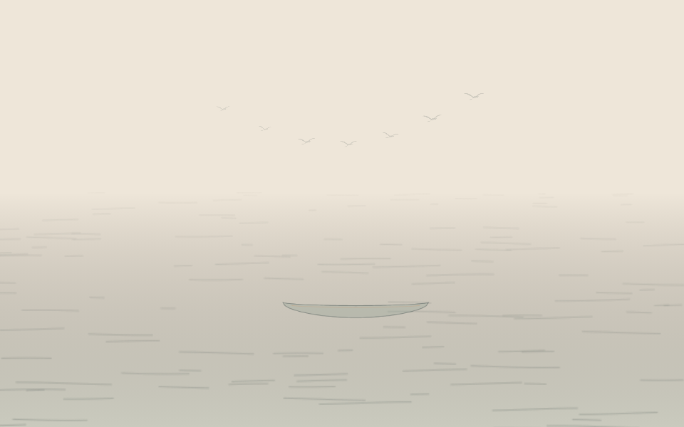
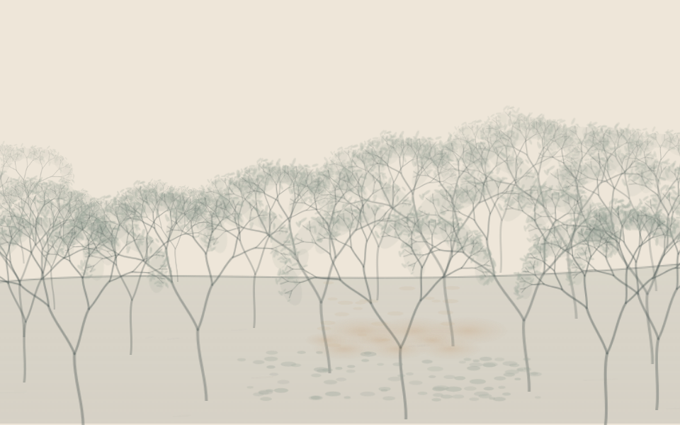
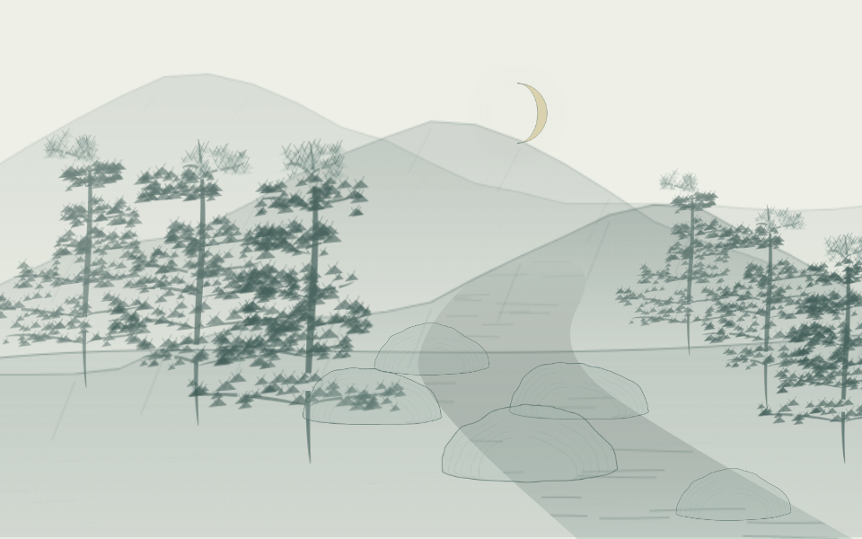
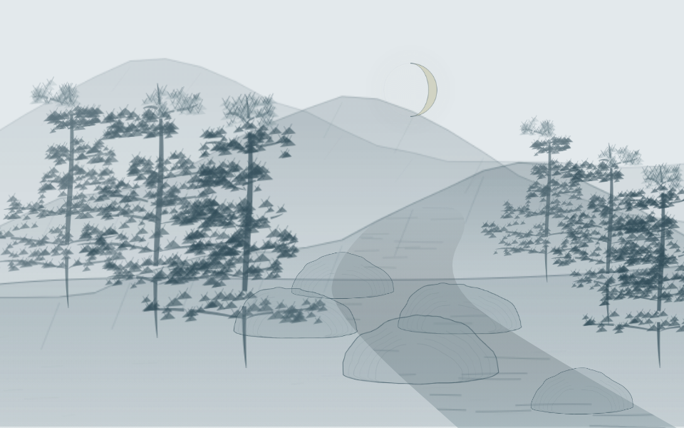
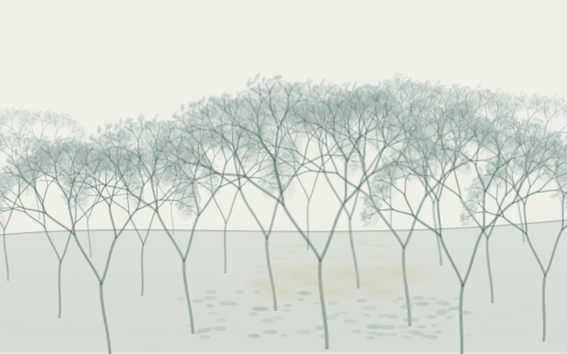
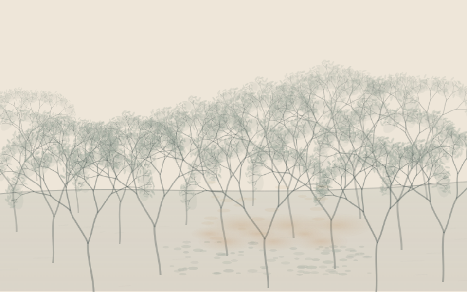
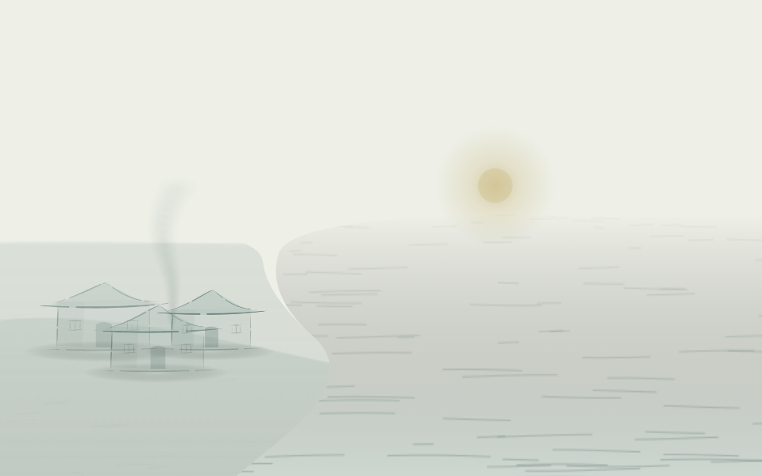
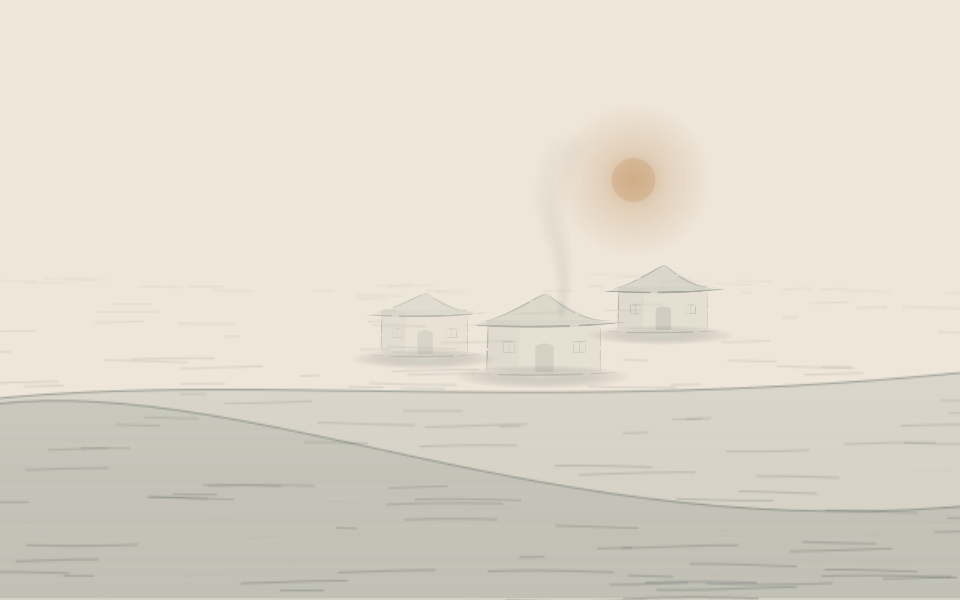
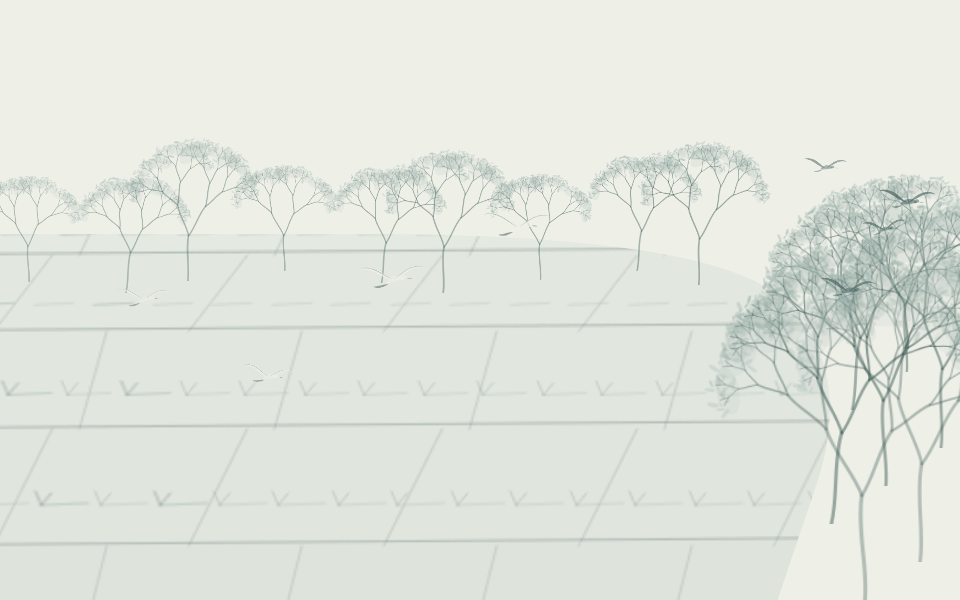
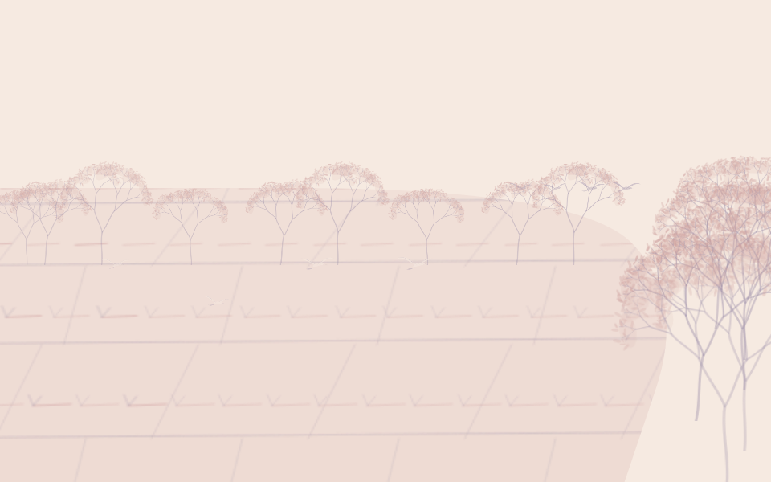

← 生成器 · 当前架构 · 原先认可的参考图 · 上一轮场景组织让解释进入画面
左右来自同一份语义回答，只开关整体场景扩展，便于查看主次、远近、动作和照明的作用。打开此页不调用模型。
本轮六次真实调用均有回答，共 34515 个返回记录 token；原始严格检查 4/6 通过。另两份仅在本地展开同句或相邻句引用后可重放，原始失败保留，语义合理性待复核。图片包含同批本地改进，不是新的独立成功率。前三组是人工校准，不计 API 成功。
动作仍是有限的主导状态和观看微动；几何检查不判定诗意或审美合格。
c01 · 漠漠帆来重，冥冥鸟去迟。
人工校准语义，不是 API 回答
同一回答，关闭 3.3 整体场景字段
消费整体场景语义 · 审美待观看 已应用 17 项，部分应用 0 项，未支持 0 项。几何错误 0 项，待复核 0 项。
依据、推断与仍有的空缺
- scene.setting · applied · 整体环境进入场景提案选择（inferred） 依据：漠漠帆来重，冥冥鸟去迟。
- scene.groups[0].role · applied · 主体相对突出（inferred） 依据：漠漠帆来重
- scene.groups[0].pattern · applied · 按 single 组织显示单元；不覆盖明确数量（inferred） 依据：漠漠帆来重
- scene.groups[0].depth · applied · 将 middle 转为相对大小、透明度与允许区域内的落点（inferred） 依据：漠漠帆来重
- scene.groups[1].role · applied · 点景缩小淡化（inferred） 依据：冥冥鸟去迟
- scene.groups[1].pattern · applied · 按 flock 组织显示单元；不覆盖明确数量（inferred） 依据：冥冥鸟去迟
- scene.groups[1].depth · applied · 将 far 转为相对大小、透明度与允许区域内的落点（inferred） 依据：冥冥鸟去迟
- scene.supports[0] · applied · 必要环境以独立推断背景表示，不新增原文实体（inferred） 依据：漠漠帆来重
- scene.actions[0].state · applied · 启用工具支持的 float 状态（inferred） 依据：漠漠帆来重
- scene.actions[0].pace · applied · 定性节奏映射为本地时钟倍率 0.35（inferred） 依据：漠漠帆来重
- scene.actions[0].direction · applied · 按定性方向作有限观看动画；不表示完整动作过程（inferred） 依据：漠漠帆来重
- scene.actions[1].state · applied · 启用工具支持的 fly 状态（inferred） 依据：冥冥鸟去迟
- scene.actions[1].pace · applied · 定性节奏映射为本地时钟倍率 0.35（inferred） 依据：冥冥鸟去迟
- scene.actions[1].direction · applied · 按定性方向作有限观看动画；不表示完整动作过程（inferred） 依据：冥冥鸟去迟
- scene.atmosphere.visibility · applied · 可见度 hazy；迷蒙或昏暗时淡化非光源图层（inferred） 依据：漠漠帆来重，冥冥鸟去迟。
- scene.atmosphere.illumination · applied · 照明 twilight 映射为本地 twilight 配色；用户仍可手动覆盖（inferred） 依据：漠漠帆来重，冥冥鸟去迟。
- atmosphere.energy · skipped · 没有明确动作节奏时，气息强弱控制已有微动的默认时钟
- atmosphere.openness · applied · 开阔度转换为本地间距与工具笔触密度，不等于原文数量
- atmosphere.valence · skipped · 照明策略优先，本次不另套情绪配色
- time.markers · retained · 保留原文时间标记；本版照明由 scene.atmosphere 转换，多阶段时间逻辑未执行
c02 · 返景入深林，复照青苔上。
人工校准语义，不是 API 回答
 同一回答，关闭 3.3 整体场景字段
同一回答，关闭 3.3 整体场景字段
消费整体场景语义 · 审美待观看已应用 15 项，部分应用 0 项，未支持 0 项。几何错误 0 项，待复核 0 项。
依据、推断与仍有的空缺
- scene.setting · applied · 整体环境进入场景提案选择（inferred） 依据：返景入深林，复照青苔上。
- scene.groups[0].role · applied · 点景缩小淡化（inferred） 依据：返景入深林，复照青苔上。
- scene.groups[0].pattern · applied · 按 single 组织显示单元；不覆盖明确数量（inferred） 依据：返景入深林，复照青苔上。
- scene.groups[0].depth · applied · 将 near 转为相对大小、透明度与允许区域内的落点（inferred） 依据：返景入深林，复照青苔上。
- scene.groups[1].role · applied · 保留环境群落层次（inferred） 依据：返景入深林，复照青苔上。
- scene.groups[1].pattern · applied · 按 grove 组织显示单元；不覆盖明确数量（inferred） 依据：返景入深林，复照青苔上。
- scene.groups[1].depth · applied · 将 middle 转为相对大小、透明度与允许区域内的落点（inferred） 依据：返景入深林，复照青苔上。
- scene.groups[2].role · applied · 点景缩小淡化（inferred） 依据：返景入深林，复照青苔上。
- scene.groups[2].pattern · applied · 按 field 组织显示单元；不覆盖明确数量（inferred） 依据：返景入深林，复照青苔上。
- scene.groups[2].depth · applied · 将 near 转为相对大小、透明度与允许区域内的落点（inferred） 依据：返景入深林，复照青苔上。
- scene.supports[0] · applied · 必要环境以独立推断背景表示，不新增原文实体（inferred） 依据：返景入深林，复照青苔上。
- scene.atmosphere.visibility · applied · 可见度 clear；迷蒙或昏暗时淡化非光源图层（inferred） 依据：返景入深林，复照青苔上。
- scene.atmosphere.illumination · applied · 照明 twilight 映射为本地 twilight 配色；用户仍可手动覆盖（inferred） 依据：返景入深林，复照青苔上。
- atmosphere.energy · applied · 没有明确动作节奏时，气息强弱控制已有微动的默认时钟
- atmosphere.openness · applied · 开阔度转换为本地间距与工具笔触密度，不等于原文数量
- atmosphere.valence · skipped · 照明策略优先，本次不另套情绪配色
- time.markers · retained · 保留原文时间标记；本版照明由 scene.atmosphere 转换，多阶段时间逻辑未执行
c03 · 孤舟蓑笠翁，独钓寒江雪。
人工校准语义，不是 API 回答
同一回答，关闭 3.3 整体场景字段消费整体场景语义 · 审美待观看
已应用 23 项，部分应用 0 项，未支持 0 项。几何错误 0 项，待复核 0 项。
依据、推断与仍有的空缺
- scene.setting · applied · 整体环境进入场景提案选择（inferred） 依据：孤舟蓑笠翁，独钓寒江雪。
- scene.groups[0].role · applied · 主体相对突出（inferred） 依据：孤舟蓑笠翁，独钓寒江雪。
- scene.groups[0].pattern · applied · 按 single 组织显示单元；不覆盖明确数量（inferred） 依据：孤舟蓑笠翁，独钓寒江雪。
- scene.groups[0].depth · applied · 将 middle 转为相对大小、透明度与允许区域内的落点（inferred） 依据：孤舟蓑笠翁，独钓寒江雪。
- scene.groups[1].role · applied · 保留环境画布范围，主次不改变地形边界（inferred） 依据：孤舟蓑笠翁，独钓寒江雪。
- scene.groups[1].pattern · applied · 按 field 组织显示单元；不覆盖明确数量（inferred） 依据：孤舟蓑笠翁，独钓寒江雪。
- scene.groups[1].depth · applied · 将 middle 转为相对大小、透明度与允许区域内的落点（inferred） 依据：孤舟蓑笠翁，独钓寒江雪。
- scene.groups[2].role · applied · 点景缩小淡化（inferred） 依据：孤舟蓑笠翁，独钓寒江雪。
- scene.groups[2].pattern · applied · 按 field 组织显示单元；不覆盖明确数量（inferred） 依据：孤舟蓑笠翁，独钓寒江雪。
- scene.groups[2].depth · skipped · 远近未明，保持本地默认（inferred） 依据：孤舟蓑笠翁，独钓寒江雪。
- scene.supports[0] · applied · 使用已提取主体的现有承托画法（inferred） 依据：孤舟蓑笠翁，独钓寒江雪。
- scene.supports[1] · applied · 使用已提取主体的现有承托画法（inferred） 依据：孤舟蓑笠翁，独钓寒江雪。
- scene.actions[0].state · applied · 启用工具支持的 float 状态（inferred） 依据：孤舟蓑笠翁，独钓寒江雪。
- scene.actions[0].pace · applied · 定性节奏映射为本地时钟倍率 0.35（inferred） 依据：孤舟蓑笠翁，独钓寒江雪。
- scene.actions[0].direction · applied · 方向未明，仅用本地小幅微动（inferred） 依据：孤舟蓑笠翁，独钓寒江雪。
- scene.actions[1].state · applied · 静止姿态并停止该图层时钟（inferred） 依据：孤舟蓑笠翁，独钓寒江雪。
- scene.actions[1].pace · skipped · 静止状态不推进时钟或位置（inferred） 依据：孤舟蓑笠翁，独钓寒江雪。
- scene.actions[1].direction · skipped · 静止状态不推进时钟或位置（inferred） 依据：孤舟蓑笠翁，独钓寒江雪。
- scene.actions[2].state · applied · 启用工具支持的 fall 状态（inferred） 依据：孤舟蓑笠翁，独钓寒江雪。
- scene.actions[2].pace · applied · 定性节奏映射为本地时钟倍率 0.35（inferred） 依据：孤舟蓑笠翁，独钓寒江雪。
- scene.actions[2].direction · applied · 使用原生向上／向下运动，不平移依托锚点（inferred） 依据：孤舟蓑笠翁，独钓寒江雪。
- scene.atmosphere.visibility · applied · 可见度 hazy；迷蒙或昏暗时淡化非光源图层（inferred） 依据：孤舟蓑笠翁，独钓寒江雪。
- scene.atmosphere.illumination · applied · 照明 day 映射为本地 clear 配色；用户仍可手动覆盖（inferred） 依据：孤舟蓑笠翁，独钓寒江雪。
- atmosphere.energy · applied · 没有明确动作节奏时，气息强弱控制已有微动的默认时钟
- atmosphere.openness · applied · 开阔度转换为本地间距与工具笔触密度，不等于原文数量
- atmosphere.valence · applied · 正向感受暂用 tender，其余用 clear；尚非完整情感色谱
- time.markers · retained · 保留原文时间标记；本版照明由 scene.atmosphere 转换，多阶段时间逻辑未执行
s01 · 漠漠帆来重，冥冥鸟去迟。
真实 API 回答，原始校验通过
同一回答，关闭 3.3 整体场景字段消费整体场景语义 · 审美待观看
已应用 15 项，部分应用 0 项，未支持 0 项。几何错误 0 项，待复核 0 项。
依据、推断与仍有的空缺
- scene.setting · applied · 整体环境进入场景提案选择（inferred） 依据：漠漠帆来重
- scene.groups[0].role · applied · 主体相对突出（inferred） 依据：漠漠帆来重
- scene.groups[0].pattern · applied · 按 single 组织显示单元；不覆盖明确数量（inferred） 依据：漠漠帆来重
- scene.groups[0].depth · skipped · 远近未明，保持本地默认（inferred） 依据：漠漠帆来重
- scene.groups[1].role · applied · 主体相对突出（inferred） 依据：冥冥鸟去迟
- scene.groups[1].pattern · applied · 按 single 组织显示单元；不覆盖明确数量（inferred） 依据：冥冥鸟去迟
- scene.groups[1].depth · skipped · 远近未明，保持本地默认（inferred） 依据：冥冥鸟去迟
- scene.supports[0] · applied · 必要环境以独立推断背景表示，不新增原文实体（inferred） 依据：漠漠帆来重
- scene.actions[0].state · applied · 启用工具支持的 float 状态（inferred） 依据：漠漠帆来重
- scene.actions[0].pace · applied · 定性节奏映射为本地时钟倍率 0.35（inferred） 依据：漠漠帆来重
- scene.actions[0].direction · applied · 按定性方向作有限观看动画；不表示完整动作过程（inferred） 依据：漠漠帆来重
- scene.actions[1].state · applied · 启用工具支持的 fly 状态（inferred） 依据：冥冥鸟去迟
- scene.actions[1].pace · applied · 定性节奏映射为本地时钟倍率 0.35（inferred） 依据：冥冥鸟去迟
- scene.actions[1].direction · applied · 按定性方向作有限观看动画；不表示完整动作过程（inferred） 依据：冥冥鸟去迟
- scene.atmosphere.visibility · applied · 可见度 hazy；迷蒙或昏暗时淡化非光源图层（inferred） 依据：漠漠帆来重／冥冥鸟去迟
- scene.atmosphere.illumination · skipped · 照明 unclear 映射为本地 clear 配色；用户仍可手动覆盖（inferred） 依据：漠漠帆来重／冥冥鸟去迟
- atmosphere.energy · skipped · 没有明确动作节奏时，气息强弱控制已有微动的默认时钟
- atmosphere.openness · applied · 开阔度转换为本地间距与工具笔触密度，不等于原文数量
- atmosphere.valence · applied · 正向感受暂用 tender，其余用 clear；尚非完整情感色谱
- time.markers · retained · 保留原文时间标记；本版照明由 scene.atmosphere 转换，多阶段时间逻辑未执行
s02 · 明月松间照，清泉石上流。
真实 API 回答，原始校验通过

同一回答，关闭 3.3 整体场景字段
消费整体场景语义 · 审美待观看已应用 10 项，部分应用 1 项，未支持 0 项。几何错误 0 项，待复核 0 项。
依据、推断与仍有的空缺
- scene.setting · applied · 整体环境进入场景提案选择（inferred） 依据：明月松间照／清泉石上流
- scene.groups[0].role · applied · 主体相对突出（inferred） 依据：明月松间照
- scene.groups[0].pattern · skipped · 群落形式未明，保持本地默认（inferred） 依据：明月松间照
- scene.groups[0].depth · skipped · 远近未明，保持本地默认（inferred） 依据：明月松间照
- scene.groups[1].role · applied · 保留环境画布范围，主次不改变地形边界；主体相对突出（inferred） 依据：清泉石上流
- scene.groups[1].pattern · skipped · 群落形式未明，保持本地默认（inferred） 依据：清泉石上流
- scene.groups[1].depth · skipped · 远近未明，保持本地默认（inferred） 依据：清泉石上流
- scene.supports[0] · partial · 溪水与石共用空间依托；尚未模拟水流越过石面的流体形变（explicit） 依据：清泉石上流
- scene.actions[0].state · applied · 静止姿态并停止该图层时钟（inferred） 依据：明月松间照
- scene.actions[0].pace · skipped · 静止状态不推进时钟或位置（inferred） 依据：明月松间照
- scene.actions[0].direction · skipped · 静止状态不推进时钟或位置（inferred） 依据：明月松间照
- scene.actions[1].state · applied · 启用工具支持的 flow 状态（explicit） 依据：清泉石上流
- scene.actions[1].pace · applied · 定性节奏映射为本地时钟倍率 0.45（explicit） 依据：清泉石上流
- scene.actions[1].direction · skipped · 该工具尚不支持此动作分量（explicit） 依据：清泉石上流
- scene.atmosphere.visibility · applied · 可见度 clear；迷蒙或昏暗时淡化非光源图层（inferred） 依据：明月松间照
- scene.atmosphere.illumination · applied · 照明 night 映射为本地 night 配色；用户仍可手动覆盖（inferred） 依据：明月松间照
- atmosphere.energy · applied · 没有明确动作节奏时，气息强弱控制已有微动的默认时钟
- atmosphere.openness · applied · 开阔度转换为本地间距与工具笔触密度，不等于原文数量
- atmosphere.valence · skipped · 照明策略优先，本次不另套情绪配色
- time.markers · retained · 保留原文时间标记；本版照明由 scene.atmosphere 转换，多阶段时间逻辑未执行
s03 · 返景入深林，复照青苔上。
真实 API 回答，原始校验未通过；本地展开相邻原句引用后重放，解读待复核

同一回答，关闭 3.3 整体场景字段
消费整体场景语义 · 审美待观看已应用 13 项，部分应用 0 项，未支持 1 项。几何错误 0 项，待复核 2 项。
依据、推断与仍有的空缺
原始错误：spatial[0] 依据未关联关系两端。只展开引用范围，没有改变实体、数量或关系判断，没有重试模型。
- scene.setting · applied · 整体环境进入场景提案选择（explicit） 依据：返景入深林
- scene.groups[0].role · applied · 保留环境群落层次（inferred） 依据：返景入深林
- scene.groups[0].pattern · applied · 按 grove 组织显示单元；不覆盖明确数量（inferred） 依据：返景入深林
- scene.groups[0].depth · skipped · 远近未明，保持本地默认（inferred） 依据：返景入深林
- scene.groups[1].role · applied · 点景缩小淡化（inferred） 依据：复照青苔上
- scene.groups[1].pattern · applied · 按 field 组织显示单元；不覆盖明确数量（inferred） 依据：复照青苔上
- scene.groups[1].depth · applied · 将 near 转为相对大小、透明度与允许区域内的落点（inferred） 依据：复照青苔上
- scene.groups[2].role · applied · 主体相对突出（inferred） 依据：返景入深林／复照青苔上
- scene.groups[2].pattern · applied · 按 single 组织显示单元；不覆盖明确数量（inferred） 依据：返景入深林／复照青苔上
- scene.groups[2].depth · skipped · 远近未明，保持本地默认（inferred） 依据：返景入深林／复照青苔上
- scene.supports[0] · applied · 必要环境以独立推断背景表示，不新增原文实体（inferred） 依据：复照青苔上
- scene.actions[0].state · unsupported · 当前工具尚无对应动作状态（inferred） 依据：返景入深林／复照青苔上
- scene.actions[0].pace · skipped · 该工具尚不支持此动作分量（inferred） 依据：返景入深林／复照青苔上
- scene.actions[0].direction · skipped · 该工具尚不支持此动作分量（inferred） 依据：返景入深林／复照青苔上
- scene.atmosphere.visibility · applied · 可见度 dark；迷蒙或昏暗时淡化非光源图层（inferred） 依据：返景入深林／复照青苔上
- scene.atmosphere.illumination · applied · 照明 twilight 映射为本地 twilight 配色；用户仍可手动覆盖（inferred） 依据：返景入深林／复照青苔上
- atmosphere.energy · applied · 没有明确动作节奏时，气息强弱控制已有微动的默认时钟
- atmosphere.openness · applied · 开阔度转换为本地间距与工具笔触密度，不等于原文数量
- atmosphere.valence · skipped · 照明策略优先，本次不另套情绪配色
- time.markers · retained · 保留原文时间标记；本版照明由 scene.atmosphere 转换，多阶段时间逻辑未执行
s04 · 孤舟蓑笠翁，独钓寒江雪。
真实 API 回答，原始校验未通过；本地展开相邻原句引用后重放，解读待复核
同一回答，关闭 3.3 整体场景字段消费整体场景语义 · 审美待观看
已应用 15 项，部分应用 0 项，未支持 0 项。几何错误 0 项，待复核 1 项。
依据、推断与仍有的空缺
原始错误：spatial[1] 依据未关联关系两端。只展开引用范围，没有改变实体、数量或关系判断，没有重试模型。
- scene.setting · applied · 整体环境进入场景提案选择（inferred） 依据：独钓寒江雪
- scene.groups[0].role · applied · 主体相对突出（inferred） 依据：孤舟蓑笠翁
- scene.groups[0].pattern · applied · 按 single 组织显示单元；不覆盖明确数量（inferred） 依据：孤舟蓑笠翁
- scene.groups[0].depth · applied · 将 near 转为相对大小、透明度与允许区域内的落点（inferred） 依据：孤舟蓑笠翁
- scene.groups[1].role · applied · 保留环境画布范围，主次不改变地形边界；保留环境群落层次（inferred） 依据：独钓寒江雪
- scene.groups[1].pattern · applied · 按 field 组织显示单元；不覆盖明确数量（inferred） 依据：独钓寒江雪
- scene.groups[1].depth · applied · 将 middle 转为相对大小、透明度与允许区域内的落点（inferred） 依据：独钓寒江雪
- scene.supports[0] · applied · 使用已提取主体的现有承托画法（inferred） 依据：孤舟蓑笠翁
- scene.supports[1] · applied · 使用已提取主体的现有承托画法（inferred） 依据：孤舟蓑笠翁，独钓寒江雪。
- scene.actions[0].state · applied · 静止姿态并停止该图层时钟（inferred） 依据：孤舟蓑笠翁，独钓寒江雪。
- scene.actions[0].pace · skipped · 静止状态不推进时钟或位置（inferred） 依据：孤舟蓑笠翁，独钓寒江雪。
- scene.actions[0].direction · skipped · 静止状态不推进时钟或位置（inferred） 依据：孤舟蓑笠翁，独钓寒江雪。
- scene.atmosphere.visibility · applied · 可见度 clear；迷蒙或昏暗时淡化非光源图层（inferred） 依据：独钓寒江雪
- scene.atmosphere.illumination · applied · 照明 day 映射为本地 clear 配色；用户仍可手动覆盖（inferred） 依据：独钓寒江雪
- atmosphere.energy · applied · 没有明确动作节奏时，气息强弱控制已有微动的默认时钟
- atmosphere.openness · applied · 开阔度转换为本地间距与工具笔触密度，不等于原文数量
- atmosphere.valence · applied · 正向感受暂用 tender，其余用 clear；尚非完整情感色谱
- time.markers · retained · 保留原文时间标记；本版照明由 scene.atmosphere 转换，多阶段时间逻辑未执行
s05 · 渡头馀落日，墟里上孤烟。
真实 API 回答，原始校验通过

同一回答，关闭 3.3 整体场景字段
消费整体场景语义 · 审美待观看已应用 14 项，部分应用 1 项，未支持 1 项。几何错误 0 项，待复核 2 项。
依据、推断与仍有的空缺
- scene.setting · applied · 必要环境以独立推断背景表示，不新增原文实体（inferred） 依据：渡头馀落日／墟里上孤烟
- scene.groups[0].role · applied · 保留环境画布范围，主次不改变地形边界；主体相对突出（inferred） 依据：渡头馀落日
- scene.groups[0].pattern · applied · 按 single 组织显示单元；不覆盖明确数量（inferred） 依据：渡头馀落日
- scene.groups[0].depth · applied · 将 middle 转为相对大小、透明度与允许区域内的落点（inferred） 依据：渡头馀落日
- scene.groups[1].role · applied · 主体相对突出（inferred） 依据：墟里上孤烟
- scene.groups[1].pattern · applied · 按 single 组织显示单元；不覆盖明确数量（inferred） 依据：墟里上孤烟
- scene.groups[1].depth · applied · 将 far 转为相对大小、透明度与允许区域内的落点（inferred） 依据：墟里上孤烟
- scene.supports[0] · unsupported · 光源不作地面上的实体，未执行该依托判断（inferred） 依据：渡头馀落日
- scene.supports[1] · partial · 烟与已有屋舍建立屋顶锚点；未把烟当作落地实体（inferred） 依据：墟里上孤烟
- scene.actions[0].state · applied · 启用工具支持的 rise 状态（inferred） 依据：墟里上孤烟
- scene.actions[0].pace · applied · 定性节奏映射为本地时钟倍率 0.35（inferred） 依据：墟里上孤烟
- scene.actions[0].direction · applied · 使用原生向上／向下运动，不平移依托锚点（inferred） 依据：墟里上孤烟
- scene.atmosphere.visibility · applied · 可见度 clear；迷蒙或昏暗时淡化非光源图层（inferred） 依据：渡头馀落日
- scene.atmosphere.illumination · applied · 照明 twilight 映射为本地 twilight 配色；用户仍可手动覆盖（inferred） 依据：渡头馀落日
- atmosphere.energy · applied · 没有明确动作节奏时，气息强弱控制已有微动的默认时钟
- atmosphere.openness · applied · 开阔度转换为本地间距与工具笔触密度，不等于原文数量
- atmosphere.valence · skipped · 照明策略优先，本次不另套情绪配色
- time.markers · retained · 保留原文时间标记；本版照明由 scene.atmosphere 转换，多阶段时间逻辑未执行
s06 · 漠漠水田飞白鹭，阴阴夏木啭黄鹂。
真实 API 回答，原始校验通过

同一回答，关闭 3.3 整体场景字段
消费整体场景语义 · 审美待观看已应用 23 项，部分应用 0 项，未支持 0 项。几何错误 0 项，待复核 2 项。
依据、推断与仍有的空缺
- scene.setting · applied · 整体环境进入场景提案选择（inferred） 依据：漠漠水田飞白鹭／阴阴夏木啭黄鹂
- scene.groups[0].role · applied · 保留环境画布范围，主次不改变地形边界（inferred） 依据：漠漠水田飞白鹭
- scene.groups[0].pattern · applied · 按 field 组织显示单元；不覆盖明确数量（inferred） 依据：漠漠水田飞白鹭
- scene.groups[0].depth · applied · 将 middle 转为相对大小、透明度与允许区域内的落点（inferred） 依据：漠漠水田飞白鹭
- scene.groups[1].role · applied · 点景缩小淡化（inferred） 依据：漠漠水田飞白鹭
- scene.groups[1].pattern · applied · 按 single 组织显示单元；不覆盖明确数量（inferred） 依据：漠漠水田飞白鹭
- scene.groups[1].depth · applied · 将 middle 转为相对大小、透明度与允许区域内的落点（inferred） 依据：漠漠水田飞白鹭
- scene.groups[2].role · applied · 保留环境群落层次（inferred） 依据：阴阴夏木啭黄鹂
- scene.groups[2].pattern · applied · 按 grove 组织显示单元；不覆盖明确数量（inferred） 依据：阴阴夏木啭黄鹂
- scene.groups[2].depth · applied · 将 middle 转为相对大小、透明度与允许区域内的落点（inferred） 依据：阴阴夏木啭黄鹂
- scene.groups[3].role · applied · 点景缩小淡化（inferred） 依据：阴阴夏木啭黄鹂
- scene.groups[3].pattern · applied · 按 single 组织显示单元；不覆盖明确数量（inferred） 依据：阴阴夏木啭黄鹂
- scene.groups[3].depth · applied · 将 middle 转为相对大小、透明度与允许区域内的落点（inferred） 依据：阴阴夏木啭黄鹂
- scene.supports[0] · applied · 使用已提取主体的现有承托画法（inferred） 依据：漠漠水田飞白鹭
- scene.supports[1] · applied · 使用已提取主体的现有承托画法（inferred） 依据：阴阴夏木啭黄鹂
- scene.actions[0].state · applied · 启用工具支持的 fly 状态（explicit） 依据：漠漠水田飞白鹭
- scene.actions[0].pace · applied · 定性节奏映射为本地时钟倍率 0.8（explicit） 依据：漠漠水田飞白鹭
- scene.actions[0].direction · applied · 方向未明，仅用本地小幅微动（explicit） 依据：漠漠水田飞白鹭
- scene.actions[1].state · skipped · 动作未明，保留静态形态（explicit） 依据：阴阴夏木啭黄鹂
- scene.actions[1].pace · skipped · 该工具尚不支持此动作分量（explicit） 依据：阴阴夏木啭黄鹂
- scene.actions[1].direction · skipped · 该工具尚不支持此动作分量（explicit） 依据：阴阴夏木啭黄鹂
- scene.atmosphere.visibility · applied · 可见度 clear；迷蒙或昏暗时淡化非光源图层（inferred） 依据：漠漠水田飞白鹭／阴阴夏木啭黄鹂
- scene.atmosphere.illumination · applied · 照明 day 映射为本地 tender 配色；用户仍可手动覆盖（inferred） 依据：漠漠水田飞白鹭／阴阴夏木啭黄鹂
- atmosphere.energy · applied · 没有明确动作节奏时，气息强弱控制已有微动的默认时钟
- atmosphere.openness · applied · 开阔度转换为本地间距与工具笔触密度，不等于原文数量
- atmosphere.valence · applied · 正向感受暂用 tender，其余用 clear；尚非完整情感色谱
- time.markers · retained · 保留原文时间标记；本版照明由 scene.atmosphere 转换，多阶段时间逻辑未执行